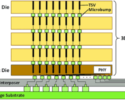
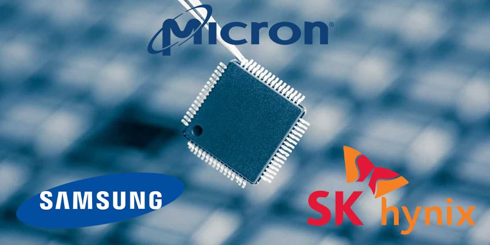

投 资 分 析
为什么基金都在增持美光？
创纪录季度营收
同比增长
毛利率
"公司已经完成了2026年全年HBM产能的价格和数量协议，包括行业领先的HBM4产品。"
— Sanjay Mehrotra，美光科技 CEO
提前锁定一整年的订单和利润
在存储芯片行业的历史上几乎前所未有
美光正站在这场变革的中心
01
从大宗商品到AI战略物资
各厂商DRAM遵循JEDEC统一标准，买方只看价格
建造一座先进工厂需投入100亿美元以上
新建工厂从动工到投产需2-3年
→ 令人熟悉的"繁荣-萧条"周期
AI时代的到来
关键变量：一种叫做 HBM 的产品

3D堆叠架构：TSV · Die · Interposer
先进3D封装技术，不是任何厂商想做就能做
每代HBM需提前1-2年与GPU平台联合开发
供不应求，HBM4相对HBM3E溢价约50%
02
HBM + AI数据中心SSD
带宽碾压
HBM4 单堆栈
DDR5 单条
功耗比竞品低30%，跳过HBM3直接采用1β制程
专为NVIDIA Vera Rubin设计，2048位接口（翻倍）
每颗GPU配288GB HBM4，8堆栈，22 TB/s 聚合带宽
HBM市场规模（2025 → 2028）
年复合增长率 ~40%
将超过2024年整个DRAM市场总规模 · 比一年前的预测提前了两年
万亿参数模型单次检查点可达18TB，训练容错的关键
LLaMA 3 训练使用超15万亿token，6500 ION 单盘30.72TB
从SSD恢复比重新计算快14倍，长上下文推理的基础设施
运营29年的Crucial消费品牌
消费级内存和SSD
全面 All-in AI
"AI驱动的数据中心增长带来了对内存和存储的巨大需求"
03
三家厂商主导的世界

| SK海力士 | 美光 | 三星 | |
|---|---|---|---|
| 市场份额 | 62% | 21% | 17% |
| NVIDIA关系 | 第一供应商 | 深度绑定中 | 刚通过认证 |
| 核心优势 | 技术成熟度最高 | 能效 + 美系身份 | 最大DRAM产能 |
| 产能状态 | 售罄至2026 | 售罄至2026 | 正在追赶 |
HBM3E功耗低30%，为数据中心年省数亿美元电费
唯一美国存储大厂，CHIPS法案受益者，供应链安全首选
新工厂紧邻研发中心，缩短上市时间（Time-to-Market）
HBM3E发热和功耗问题，超一年未通过NVIDIA认证
2025年9月终于通过认证，重新设计DRAM核心解决热性能
全球最大DRAM产能，良率解决后可迅速释放HBM产能
04
美国本土化战略与政策支持
美国本土投资总额
CHIPS法案资助
直接+间接就业
爱达荷 · 纽约 · 弗吉尼亚
美国先进存储产能从不到2%提升至2035年约10%
全球最大DRAM产能，可能大幅增加供应并引发价格战
HBM4+需更复杂封装（混合键合），保持领先并非板上钉钉
乐观预期已计入股价，AI热潮降温或供应过剩可能导致回调
一个关键问题
昙花一现的周期性反弹 还是 历史性蜕变？
数据来源：Micron FY2026 Q1 Earnings · Counterpoint Research · U.S. CHIPS Act · TrendForce